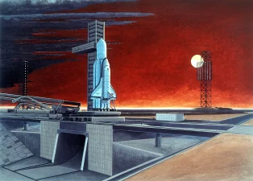
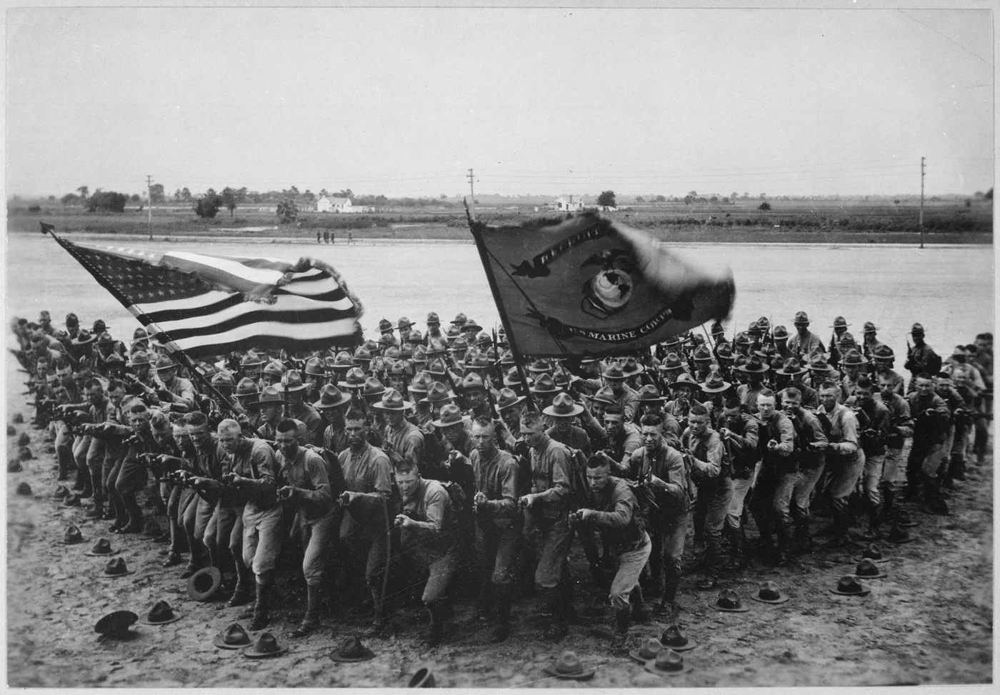
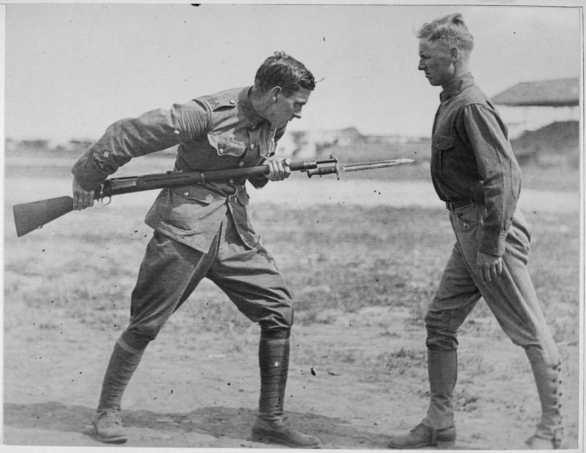
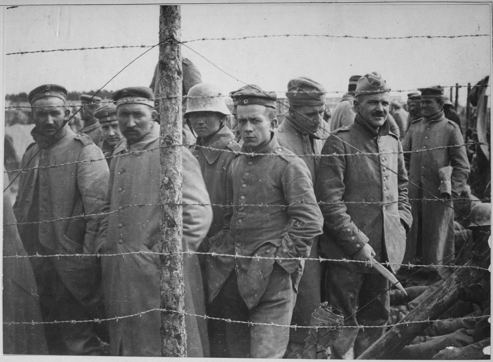
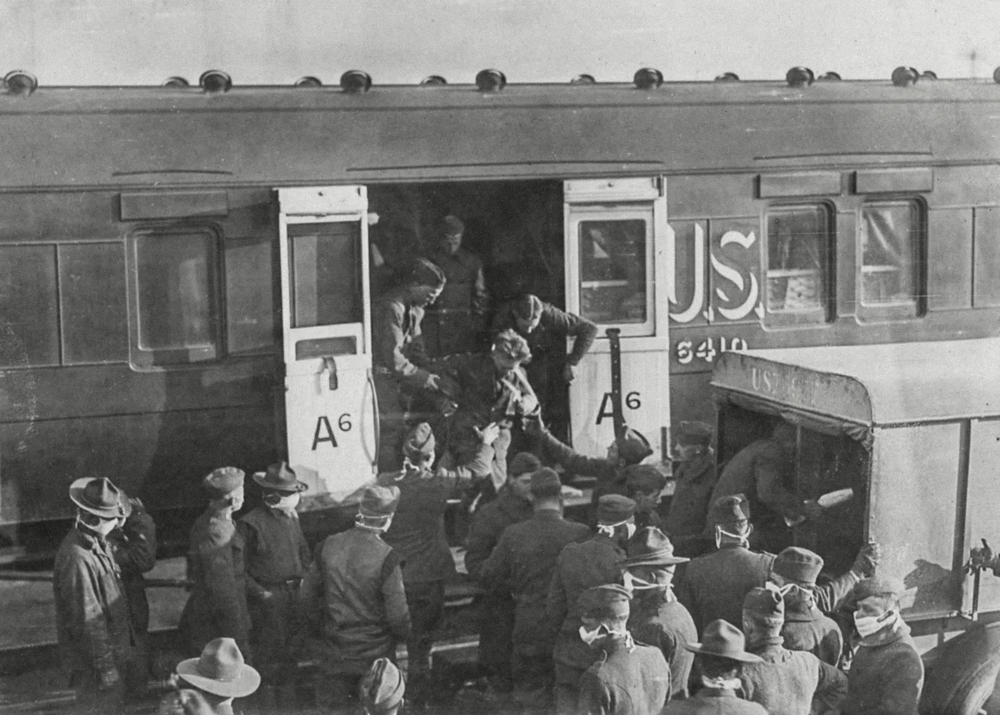
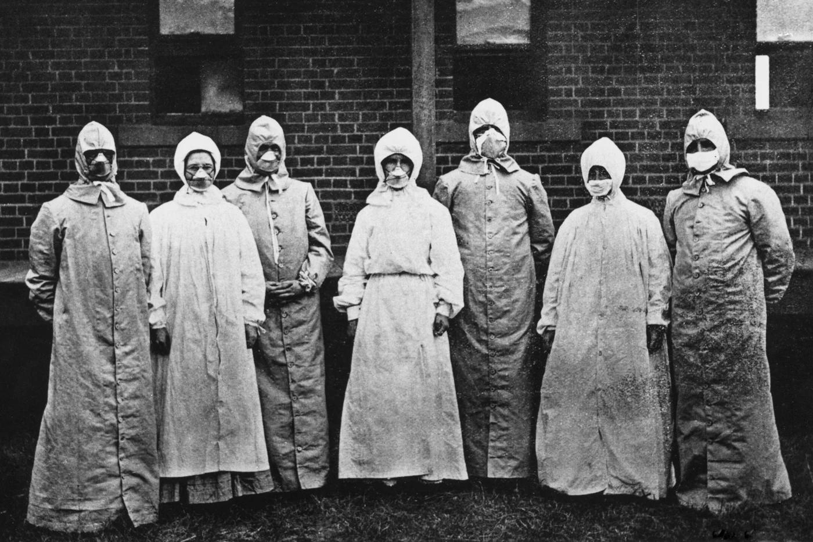
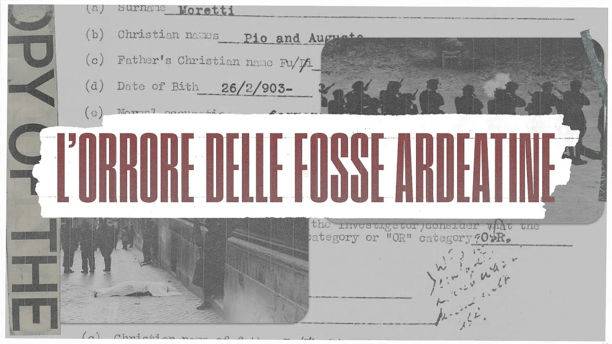
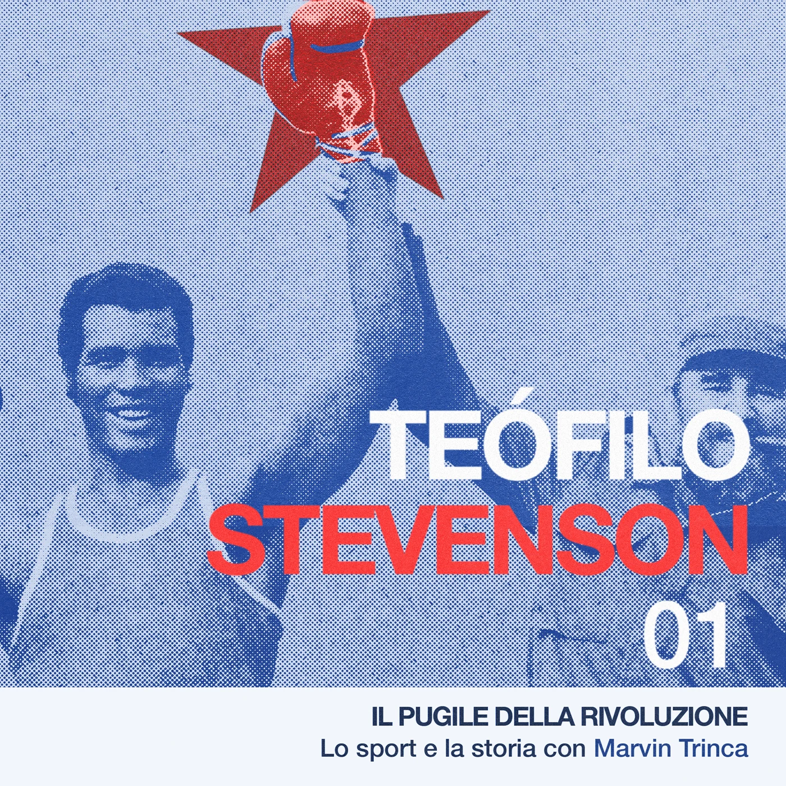

AUDIO / SPOTIFY
Il pugno del socialismo: la boxe in Unione Sovietica ↗
La boxe sovietica tra preparazione scientifica, educazione e progetto politico. Con Marvin Trinca.
Immagini, video e voci per leggere il Novecento. Il materiale visivo degli articoli incontra i podcast e i video del Café.
01 / Highlight del mese
La boxe in Unione Sovietica / Lo sport e la storia con Marvin Trinca






La boxe sovietica tra preparazione scientifica, educazione e progetto politico. Con Marvin Trinca.

Un approfondimento del Café dedicato alle Fosse Ardeatine.

Sport, ideali rivoluzionari e scelte politiche nella storia del campione cubano. Con Marvin Trinca.